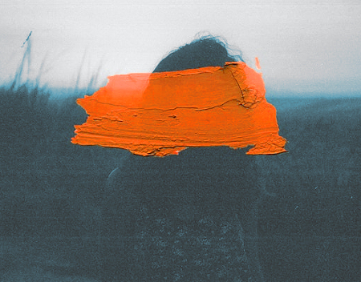
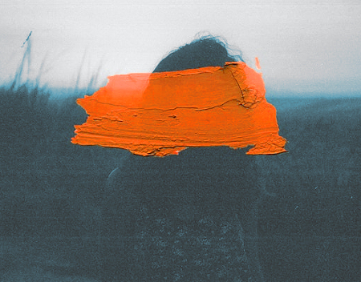
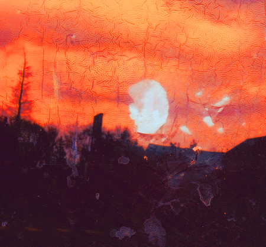
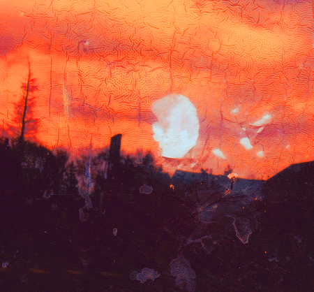

Some of the chances we take
To make the money we make
Manufacturing disease
The creature we can see
I'm pleased it's some other day
And I've got something to say
You don't need love
So get under the rock
Automatic Writing is an EP recorded by the short-lived musical project Ataxia in February 2004. The band consists of:
All three are established and successful musicians in their own right.
John Frusciante plays guitar for the Red Hot Chili Peppers and has a wide repertoire as a solo artist.
Josh Klinghoffer, a talented multi-instrumentalist, has played in many bands including Dot Hacker, Bicycle Thief and the Chili Peppers. He has also performed extensively as a guest and touring musician for artists such as PJ Harvey, Butthole Surfers, Gnarls Barkley and Beck.
Joe Lally was a founding member of Fugazi. He played bass and sang vocals in the band from 1987 to 2003.
 

I have a mutated brain
It is the form that's been made
You go for broke
With your prog rock show
Don't you know what I mean?
The sick things that I've seen
When you don't fall down
There's a piercing sound
Ataxia was formed after John and Josh played two experimental shows at Knitting Factory in early 2004. They planned two more similar performances and asked Joe to join them and play bass.
The original plan was to play existing songs from John's solo catalogue. However, the trio decided to rather write new material from scratch. This was partly due to a desire to do something more spontaneous, as well as due to Joe not feeling comfortable with trying to learn that many songs on such short notice.
It was the sky that we learned
That we're to spy on the birds
The clouds all feel
Where we don't feel real
It was implied to make a caption
"It's a pain world", is her reaction
We've answered why
it's not been actioned
We blow the ghosts
Is this our faction?
 

The band then began writing, rehearsing and recording these ten new songs comprising about 80 minutes of music. This entire process was lightning-fast (in true punk rock fashion) and only took two weeks. Five of those songs were released on Automatic Writing on the 10th of August 2004 with "Dust" as the opener. The remainder of the tracks were released on an EP called AWII in 2007.
These sessions were recorded in a live band setting with minimal overdubbing and added electronic treatments. The members shared vocal and lyric-writing duties. Josh sang on "Another", Joe on "Montreal" and John on the other three songs.

Ataxia first spent two days recording, then performed the two shows together at the Knitting Factory as originally planned, and then spent two more days in the studio completing their ten songs.
This was the movie we made
and we were shooting to fate
We gather dust
when you said it's a must
After this, the project disbanded just as swiftly and suddenly as it was formed. This musical project was as instinctive, enigmatic and impulsive of an endeavour as the title of the EP suggests.